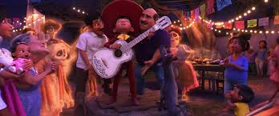

La importancia del recuerdo
Recordar a los seres queridos mantiene viva su memoria.
Miguel Rivera suena con convertirse en musico, a pesar de las reglas estrictas de su familia.
La familia Rivera ha prohibido la musica desde hace generaciones.
Todo cambia cuando Miguel descubre el misterio alrededor de su tatarabuelo.
Santa Cecilia es el pueblo natal de Miguel.
La musica forma parte importante de la historia.
La familia Rivera dirige un negocio de zapateria.
El mundo de los muertos esta lleno de colores y tradiciones.
El puente de flores conecta ambos mundos durante el Dia de Muertos.
Recordar a los seres queridos mantiene viva su memoria.